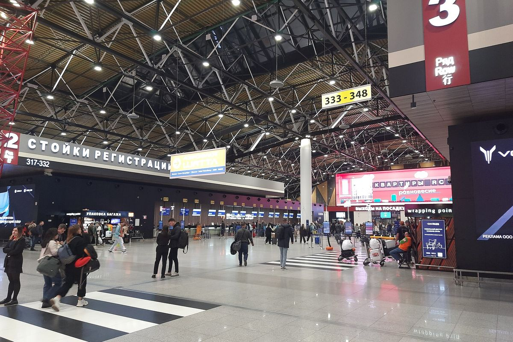

Леночка приезжает
Восемь дней, из которых я убрал всё лишнее — дорогу, суету и вопросы «а что дальше». Останутся город, три вечера и время, которое можно провести не спеша.
Леночка,
я собирал эти восемь дней так, как собирают дом к приезду дорогого гостя: сначала убрать лишнее, потом поставить цветы.
В плане нет ни одной строки «на всякий случай». Каждый вечер выбран заранее — чтобы нам не пришлось стоять на улице и решать, куда пойти. А между делами оставлены длинные промежутки: на кофе, на «ой, смотри», на пройти мимо и вернуться.
Один вечер я оставил не нашим: в четверг у тебя деловой ужин с коллегами, и так надо. Я в этот вечер буду просто скучать — предупреждаю заранее, чтобы ты не удивлялась.
Если что-то не совпадёт с настроением — скажи, и я поменяю. План для этого и нужен: чтобы его можно было спокойно нарушить.
Я очень жду.

Наконец-то
День, который я жду с начала осени. И он начинается в Жуковском, в 10:40.
- Встречаю в Жуковском: рейс SZ337 из Душанбе, прилёт по московскому времени
- Едем в отель: 47 км, в пятницу закладываю полтора часа. Приедем раньше 14:00 — оставим вещи и перекусим
- Заселение в Сафмар Аврора Люкс, Петровка, 11
- Аутлет на Орджоникидзе — тёплые кроссовки и всё, что попадётся; перекус по пути, без спешки
- Прогулка «наугад»: Парк Горького, набережные, мосты, Китай-город — и пешком до отеляУжин в номере: по дороге берём что-нибудь с собой — роллы подойдутВанна, тишина, приятная атмосфера

Лето посреди ноября
Суббота без часов — и один вечер, который притворяется летом.
- Гуляем по центру: Патриаршие, бульвары, Арбат. Маршрут дорисую — темп выбираем на месте
- Едем на юг, к Шаболовской — Дом винтажной музыки, Орджоникидзе, 1: пятнадцать минут от отеляУжин рядом с театром — чтобы не искать еду после«Один день лета»: Цветаева, Бродский, Левитанский под гитару и скрипку. Час сцены и полчаса открытого микрофонаДвенадцать минут до отеля — и никакой программы

Свадьба, которая не наша
Воскресенье у нас длинное: город днём, театр вечером, ужин у Славянской площади.
- Чистые пруды — начинаем с воды, фонарей и первого кофе
- Покровка и Ивановская горка: тихие переулки, куда почти не доходят туристы
- Заезжаем в отель переодеться — и снова в центр, к театру
- «Шикарная свадьба» — Театр Ярославы Славской, Малый Харитоньевский, 10Ужин — Рыба моя на Славянской площади

Пешком через центр
Понедельник не повод сидеть в отеле: идём из Петровки к реке ногами, заглядывая во всё, что понравится.
- Выходим из Сафмар Аврора Люкс пешком: Петровка, Камергерский переулок, МХТ
- Театральная площадь и Большой театр, потом Никольская и Красная площадь. Если замёрзнем — ГУМ, там тепло и есть кофе
- Парк «Зарядье» и парящий мост — Кремль и Москворецкая набережная с высоты
- Вниз по набережной: Болотная, Музеон, Крымский мост — и к причалу
- Парк Горького или кафе у воды — до посадки ещё есть время
- Яхта «Дегустационный сет» — Флотилия Radisson: ужин, который едет вместе с нами

Новый адрес
Смена отеля — тоже часть путешествия, только с чемоданами. Дальше я убегаю на работу.
- Выселяемся из Сафмар Аврора Люкс (до 12:00) — без паники, вещи поедут в одной машине
- Заселяю тебя в AZIMUT Смоленская, Смоленская, 8 — дальше ты здесь дома
- Убегаю на работу. Центр в твоём распоряжении: Арбат, Смоленская, Киевский вокзал
- Вечер в новом отеле — твой: ужин можно и не искать, внизу четыре ресторанаЕсли освобожусь раньше — напишу, и встретимся

Конференция внизу, вечер — как получится
У тебя конференция в нашем же отеле и ужины там же. У меня офис. Вечер — как получится.
- Конференция — в конференц-зале нашего отеля: из номера до зала две минуты
- У меня рабочий день
- Ужин в отеле — у тебя все ужины тамИногда бывают встречи со всеми участниками — тогда вечер идёт в компании

Не наш вечер
Второй день конференции, у меня рабочий день, а вечером у тебя деловой ужин. Я буду скучать.
- Второй день конференции — снова в конференц-зале отеля
- У меня рабочий день — заканчиваю, как получится
- Ужин в отеле, как и вчера — у тебя все ужины тамЯ буду скучать и немного грустить. Это не обида, просто я буду скучать

До следующего раза
Проводы — тоже часть встречи. Едем в аэропорт вместе и никуда не торопимся.
- Выселяемся из AZIMUT Смоленская — вещи поедут в одной машине
- Заезжаю за тобой, и вместе едем в аэропорт ко времени рейса
- Приедем раньше — ищем кафе и болтаем, пока не объявят посадкуПровожаю до самого выхода на посадку, а не до такси у подъезда